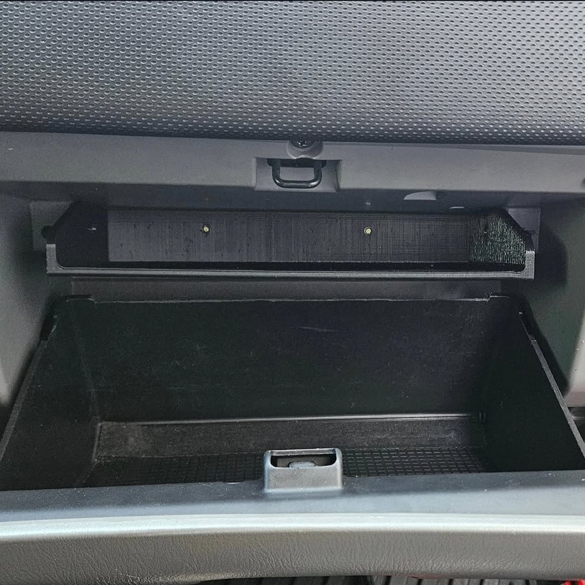

Glove Box Organizer Shelf
A one-piece shelf that gives the owner's manual its own level — without giving up the space underneath it.
Product Description:
The Forester's glove compartment is one large unstructured box, so the owner's manual, insurance, and registration end up buried under whatever else is in there. This shelf splits the compartment into two usable levels — the manual and the paperwork sit flat on top, the space below stays open — the way newer cars come from the factory.
It's a single printed piece that fits the existing compartment with no modification to the interior, and it doesn't protrude or obstruct the door.
Vehicle Fitment:
2006 - 2008 Subaru Forester (SG w/ Facelift)
Free — Open Source
Released under CC BY-NC-SA 4.0 — build it, remix it, share it with attribution; no commercial use.
Key Features:
Two Usable Levels
The manual sits on top; the space below stays open for everything else.
No Modification
Fits the existing compartment and bolts in — nothing on the interior gets cut.
One Piece
A single print. No assembly, no fasteners beyond the four mounting bolts.
Durable Material
Printed in ASA, which holds up to the heat a parked car's interior reaches.
What You Print:
- 1 ASA-Printed Shelf
The whole thing is one part. The production print project has it standing on edge with the painted supports already set up, so the plate is ready to slice as published.
What You'll Need to Supply:
- Four small bolts — one on each side, two at the rear.
Installation:
- Empty the glove compartment.
- Seat the shelf in the compartment and line it up with the side and rear walls.
- Fit the four bolts: one through each side, two through the rear.
- Check that the door still closes freely before loading it up.
Make It Yourself:
- Model — the production geometry, sized to the SG Forester compartment.
- Print settings — the production Bambu Studio project: the shelf standing on edge with painted supports already placed.
- CAD source — STEP plus the native SolidWorks file, so you can reshape it around a different car's glove box rather than starting over.
- Install notes — the four-bolt mounting pattern.

FAQs:
Where do I get the files?
Free on Thingiverse, with the full source — CAD, print project, and notes — on GitHub. Print it yourself or hand the files to someone who prints.
Will it fit a different Forester, or another car?
It was designed around the 2006–2008 SG compartment and that's the only one it has been fitted to, so treat anything else as untested. The CAD source is published in both STEP and native SolidWorks precisely so you can reshape it to your own glove box instead of hoping it drops in.
Why print it in ASA?
A parked car's interior gets hot enough to soften PLA, and a shelf that sags is worse than no shelf. ASA is what the fitted part was printed in.